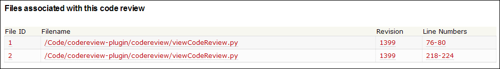
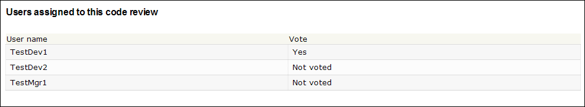
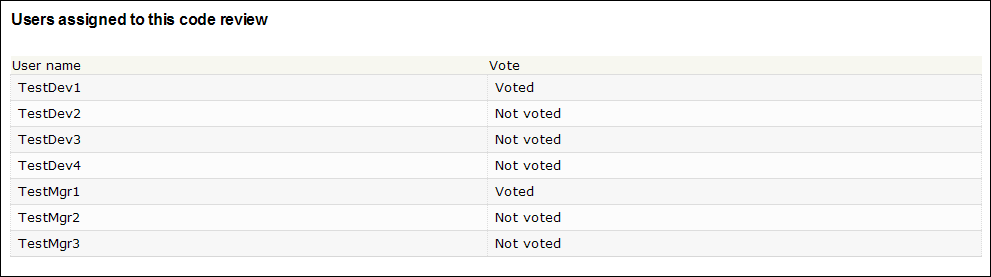
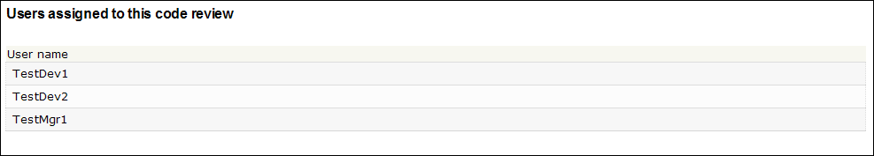
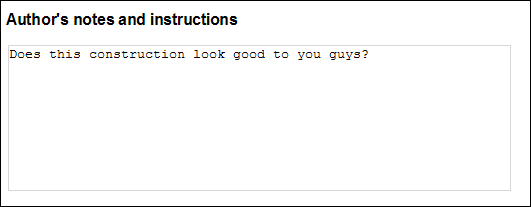
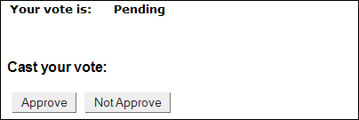
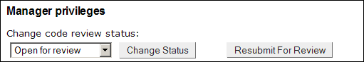

This page allows users to view the details of a given code review.
At the top of the page the name, status, author, and creation date of the code review are listed:
Next, the files that this code review encompasses are listed:

The file ID, filename, revision number, and line numbers of the files are prominently displayed in this table. Upon clicking on any of the links given in the table, the user will be taken to the perform code review page for the file in question. Note that this file is unique for each code review, regardless of duplication across separate code reviews. Also, the filename can be identical, with different line numbers. This is so that two very different portions of the file that the author modified can be shown without all of the lines in between. In the example above, about 140 lines would have needed to be shown if only one file was used.
Next, the users assigned to this code review and their vote status are visible. Managers can see whether each user has voted, and what their vote was if they have voted:

The author of the review can only see whether each user has voted or not:

Users that are neither author nor manager of the review can only see the users that are assigned to the code review:

Next, the author's notes and instructions are visible, which are general comments that the author has about the code review:

Below this is the vote summary, which summarizes the votes for insertion into the main trunk of the project, votes against insertion into the main trunk of the project, and votes that have not been cast:
This summary is only visible if the user is a manager or author or is a reviewer that has voted.
Voting members for the code review can vote if they have not voted, or view their votes and modify them if they have voted:

The author of the review can submit the code review for inclusion, resubmit for review, or close the code review:
Submitting the review for inclusion can only be performed when the percentage of the reviewers that have voted 'Yes' exceeds the threshold set by the manager.
There is no way to change a code review once it has been created. However, resubmitting for review closes a code review and creates a new code review with the same parameters. A developer might want to resubmit for review if changes were proposed and the changes have been implemented. In this case, there is a different set of code for reviewers to look at, so a new review should be created to reflect this. However, creating another review with the same parameters would normally be painstaking.
Authors can also close their code reviews, removing it from reviewers' main pages. It can still be viewed when searching.
Finally, if you are the manager of a code review, you can change the status or resubmit for review at any time:

Copyright 2005-2006 Team5